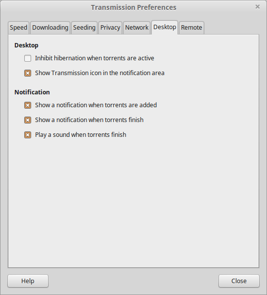

Speed |
|
Speed Limits
-
If Upload is checked, Transmission will limit session-wide upload speeds to this speed.
-
If Download is checked, Transmission will limit session-wide download speeds to this speed.
Note that you can set specific torrents to ignore the session-wide speed limits under Torrent > Properties > Options.
Alternative Speed Limits
Alternative speed limits -- often called "turtle mode" -- are a second set of upload and download limits that can be set to run on a schedule and can also be toggled manually. Scheduled use is helpful if your ISP has different bandwidth caps on evenings or weekends. Manual use is helpful as a single-click way to quickly give other applications more bandwidth. You can toggle turtle mode manually by clicking the turtle button in the lower left corner of Transmission's main window.
-
The Upload is the upload speed limit enforced when turtle mode is active.
-
The Download is the download speed limit enforced when turtle mode is active.
-
With Scheduled times, you can tell Transmission when to automatically enable and disable turtle mode.
|
|
Downloading |
|
Adding
-
If Automatically add .torrent files from is checked, Transmission will monitor the selected folder for new torrent files and will automatically add them.
-
If Show the Torrent Options dialog is checked, Transmission will show the Torrent Options dialog when you open a new torrent. The Torrent Options dialog provides various options about the torrent that you are about to add.
-
If Start added torrents is checked, Transmission will automatically start downloading the newly added torrents.
-
If Move .torrent file to the trash is checked, Transmission will automatically move the .torrent file you opened to the trash. This is useful when you don't want to manually delete the .torrent file each time.
-
Save to location is referring to the folder where the downloaded files will be saved.
Download Queue
-
Maximum active downloads is the maximum concurrent downloads that are allowed. If more torrents than the maximum torrents are to be downloaded, they will be queued and will start as long as one of the downloading torrents completes.
-
Downloads sharing data in the last N minutes are active specifies the time needed to pass since the last activity of a torrent, in order for the torrent to be stalled.
Incomplete
-
If Append ".part" to incomplete files' names is checked, Transmission will append ".part" to the files that have not finished downloading.
-
If Keep incomplete torrents in is checked, Transmission will download the torrents in the specified folder until the download finishes. When the torrent is complete, Transmission will move it to the specified save location (see Save to location above).
-
If Call script when torrent is completed is checked, Transmission will call the specified script each time a torrent finishes downloading. For more information see here.
|
|
Seeding |
|
Limits
-
If Stop seeding at ration is checked, Transmission will stop seeding a torrent when it reaches the specified ratio. Ratio is called the ratio (upload size / download size).
-
If Stop seeding if idle for N minutes is checked, Transmission will stop seeding when the torrent remains idle for the specified minutes.
|
|
Privacy |
|
Privacy
-
Encryption mode refers to BitTorrent Protocol Encryption which can be used to improve privacy. Encryption can cause a higher CPU load on older or underpowered systems.
Blocklist
-
A Blocklist is third-party list of peer addresses to block. This can be used to block peers whose addresses are believed to belong to spyware or malware manufacturers.
The Transmission Project does not evaluate or endorse any specific blocklists. If you do not know what blocklist to use, you might read about some third-party blocklists and evaluate them on your own.
-
If Enable automatic updates is enabled, Transmission will periodically refresh its copy of your blocklist from your specified URL.
Transmission's wiki has more information on blocklists.
|
|
Network |
|
Listening Port
-
Port used for incoming connections is the port that the peers will use in order to connect with you.
-
Test Port asks transmissionbt.com to test connecting to your computer as peers would. "Port is open" means that it succeeded; "Port is closed" means it failed. If the test fails, you might check your port forwarding settings on your router and your OS' filewall rules. See this page for more information.
-
Pick a random port is a suggested privacy feature since it will make your open port harder to guess. However, because it makes life understandably hard for some firewall systems, it is disabled by default.
If you use a router to connect your computer to the internet, you probably need to set up port forwarding on that router so that other peers will be able to connect to you.
-
If Use UPnP or NAT-PMP is enabled, Transmission will try to do this for you automatically.
Transmission will try to use those two standard protocols (via the third-party libraries libnatpmp and miniupnpc) to tell your router to pass incoming connections on the right port along to your computer. This, again, is so that external BitTorrent peers can initiate a connection with you.
Peer Limits
-
Maximum peers per torrent limits how many peers Transmission will allow to stay connected per torrent.
-
Maximum peers overall limits how many peers Transmission will allow to stay connected overall.
These two settings are often misunderstood -- and were left out of earlier versions of Transmission for that reason -- but they can be useful if your router can not keep up with the demands of p2p. If that happens, try lowering these numbers.
Options
-
uTP, or Micro Transport Protocol is a protocol intended to mitigate poor latency and other congestion control issues.
-
PEX, or Peer EXchange is for sharing peer lists with your connected peers. If you've already got one peer, this can be used to find more peers quickly.
-
DHT, or Dynamic Hash Table, is another peer-finding tool. Although sometimes slower than other methods, DHT can be extremely good at finding peers even where PEX, LPD, and trackers all fail.
DHT uses a Gnutella-style distributed network to find peers for you. This means your IP address and your torrent's hashcode will be passed around the distributed network in search of a match. Some people consider this to be a privacy hole and leave DHT turned off.
-
LPD, or Local Peer Discovery, is a mechanism for quickly finding other BitTorrent peers on your local network.
|
|
Desktop Integration |
|  |
Desktop
-
Inhibit hibernation when torrents are active will stop your desktop from hibernating for as long as you have active uploads or downloads.
-
Show Transmission icon in the notification area will show the Transmission's icon on the notification area. You can call basic Transmission functions from there.
Notification
-
Show a notification when torrents are added will pop up a notification when a torrent has been added without manual intervention (such as from a watch folder) and also when a torrent finishes downloading.
-
Show a notification when torrents finish will pop up a notification when a torrent has finished downloading.
-
Play a sound when torrents finish plays the system's "download complete" sound when a torrent finishes downloading. This is, perhaps, a lightweight feature -- but the appeal of hearing your computer "ding!" from down the hall is undeniable. :)
|
|
Remote |
|
Remote Control
-
If Allow remote access is checked, Transmission will make accessible a web interface. From there you will be able to control your torrents.
-
Open web client opens the Transmission's web interface in your browser.
-
HTTP port refers to the local port from where the Transmission's web interface will be accessible. It is often recommended to change the default port to something random, for security reasons.
-
If Use authentication is checked, Transmission will ask for the Username and Password in order to allow you to access the web interface.
-
If Only allow these IP adresses is checked, Transmission will only allow the specified list of addresses to access the web interface. Use the Remove and Add buttons to edit the list.
|